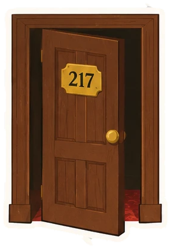
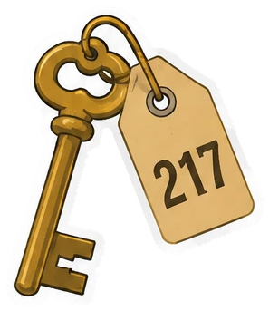
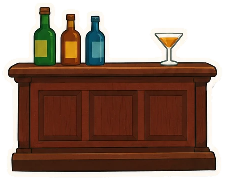

Ficha de lecturaNº 14
El Resplandor
Stephen King · 1977 · El hotel Overlook
Radar, época y nota: pendientes
—/ 5
 Ata Nymy
Ata Nymy
Un hotel, seis paradas, una caldera.
Desliza: el ascensor sube y baja solo
El día que el hotel cierra por el invierno, Hallorann, el cocinero, le sirve un helado a Danny y le habla sin mover los labios. Es el primer adulto que le dice que lo suyo tiene nombre: el resplandor.
Le explica que los lugares guardan lo que les ha pasado, como el olor a tostada quemada. Y le pide que se mantenga lejos de la 217.
Si pasa algo, que lo llame. Después Hallorann se va a Florida. Está lejos justo cuando hace falta.
Octubre. El hotel Overlook, en las montañas de Colorado, ya cerró hasta la primavera. Jack Torrance acepta el trabajo de cuidador de invierno: un sueldo, tiempo para escribir y cuatro paredes para su familia.
Con las primeras nevadas el camino se cierra. A partir de ahí el hotel y los tres Torrance quedan solos, muy lejos de cualquiera.
En el techo Jack encuentra un avispero. Lo da por muerto y se lo lleva a Danny de regalo. Está menos muerto de lo que parece.
Quédate quieto un momento
Los setos del jardín tienen forma de animales: un león, un conejo, un perro. En el libro solo se mueven cuando nadie los mira.
Hagamos la prueba: deja de hacer scroll un par de segundos y mira el ventanal.
La nieve sube y cada vez se ve menos de ellos. Cada vez que parpadeas están más cerca.


Danny sabe cosas que no debería saber. En el segundo piso hay una habitación con la puerta cerrada que nadie debería abrir: la 217.
Le han dicho que no entre. Entra.
Detrás de la cortina de la bañera hay alguien. Danny sale con marcas en el cuello, y su madre sospecha de Jack.

En el Colorado Lounge el bar está vacío, pero Lloyd, el cantinero, sirve igual. Jack lleva meses sin beber. Se sienta.
Arriba suena una fiesta de máscaras de hace décadas. Los invitados bailan y brindan y no se acaban.
Mira el reloj: avanza con tu scroll. Cuando marque la medianoche, se caen las máscaras.
En el sótano hay un álbum de recortes de periódico: la historia del hotel, con sus fiestas, sus dueños y sus muertos.
Y hay una caldera. Hay que descargarla todos los días o la presión sube hasta que revienta. Jack lo sabe. Cada día lo piensa menos.
Mira el medidor: lleva toda la historia subiendo. La última vez que Jack se acuerda de la caldera, ya es tarde.
Silencio.
Danny, Wendy y Hallorann, que volvió a tiempo, dejan atrás el hotel. En el libro nadie vuelve a necesitar un ascensor.
El Resplandor
Radar, época y nota: pendientes
¿A qué piso vas?
Ese último botón no estaba en el tablero.